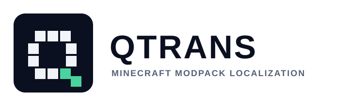
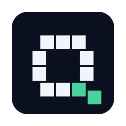

Brand study · 2026
QTrans 標誌草稿
以任務方塊與像素路徑構成原創識別，搭配現有介面的午夜藍與薄荷綠。 SVG 使用純量向量與白底，不引用 Minecraft 遊戲素材或外部字型。


圖形概念
像素任務方塊與對話路徑，呼應任務文本與本機化工作流程。
色彩
午夜藍
薄荷綠
霧白
使用範圍
README、桌面介面識別與安裝包品牌素材；正式圖示仍需 Windows 套件驗收。